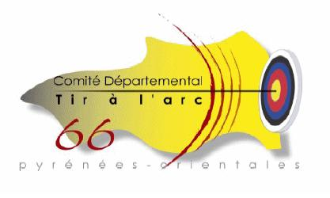

Accueil
Mission en une phrase, 2–3 actus, accès rapide documents récents, lien annuaire clubs, encart bureau (présidente).

Projet validé avec le comité. Cette page sert de feuille de route partagée : tâches, responsabilités (CODEP 66 / Matthieu), et proposition de structure éditoriale à valider ensemble avant le développement Astro 7.
codep-tirarc66.fr retenu, dépôt et Cloudflare ouverts ; reste le pointage DNS et l’ouverture des autres comptes. Transfert admin plus tard.Vue globale et détaillée de tout le projet. Les cases cochées restent sur l’appareil utilisé (pas de sync entre plusieurs personnes). Pour le focus du moment, voir Prochaines étapes.
| ✓ | Phase | Tâche | Responsable |
|---|---|---|---|
| Infra | Créer / reprendre compte OVH au nom du CODEP (ou association) — fait | CODEP 66 Matthieu | |
| Infra | Choisir, acheter et renouveler le nom de domaine — fait : codep-tirarc66.fr | CODEP + Matthieu | |
| Infra | Ouvrir les comptes Sanity et Resend (Cloudflare et GitHub déjà ouverts) | Matthieu | |
| Infra | Transférer l’admin des comptes (Sanity, Cloudflare, GitHub, Resend) vers le CODEP — plus tard | CODEP + Matthieu | |
| Infra | Initialiser l’espace Cloudflare — fait | Matthieu | |
| Infra | Pointer les noms de domaine vers Cloudflare (DNS) — reste à faire | Matthieu | |
| Cadrage | Confirmer la direction visuelle — moderne privilégiée (territoire / créatif en référence) | CODEP 66 | |
| Contenu | Valider l’arborescence et les intitulés de menu avec le bureau | CODEP + Matthieu | |
| Contenu | Rédiger « Le comité » : mission, historique, lien fédération / ligue | CODEP 66 | |
| Contenu | Liste bureau + contacts (élus, rôles, e-mail / tél. publics) | CODEP 66 | |
| Contenu | Collecter données annuaire clubs (nom, commune, site, contact, horaires, fiche sans site) | CODEP 66 | |
| Contenu | Inventorier PDF existants (comptes rendus, assemblées générales, convocations, règlements, formulaires) | CODEP 66 | |
| Contenu | Calendrier des compétitions départementales / formations à publier (saison en cours) | CODEP 66 | |
| Contenu | Mentions légales, politique de confidentialité (RGPD), crédits photos | CODEP + Matthieu | |
| Dev | Initialiser repo Astro 7 + Tailwind — codep-tirarc66 (page statique v0) | Matthieu | |
| Dev | Projet Sanity + schémas (actus, docs, bureau, clubs, paramètres) | Matthieu | |
| Dev | Déployer Studio Sanity + site staging Cloudflare Pages | Matthieu | |
| Dev | Webhook Sanity → rebuild automatique | Matthieu | |
| Dev | Formulaire contact (+ Turnstile anti-spam) si souhaité | Matthieu | |
| Dev | Pages annuaire + fiche club (site externe ou vitrine CODEP) | Matthieu | |
| Recette | Session formation Sanity (1–2 bénévoles rédacteurs) | CODEP + Matthieu | |
| Recette | Relecture contenu et liens par le bureau | CODEP 66 | |
| Prod | Mise en production domaine + communication aux clubs | CODEP + Matthieu | |
| Contenu | Récupérer le logo CODEP en meilleure définition (fichier source vectoriel ou PNG/JPG haute résolution pour le site) | CODEP + Matthieu | |
| Contenu | Valider l’encart permanence (lieu, horaires affichés sur la page d’accueil provisoire) | CODEP 66 | |
| Contenu | Valider l’adresse e-mail de contact publique (codeptiralarc66@gmail.com ou autre) | CODEP 66 |
codep-tirarc66.fr. Reste à faire : pointer les noms vers Cloudflare.codep-tirarc66.fr.D’après l’objet associatif et le rôle départemental (fédération), le comité :
Objectif : un site lisible pour les responsables de clubs et les archers, sans dupliquer le site national de la fédération.
Les titres rouges (Accueil, Le CODEP…) = entrées du menu, chacune = une page (/le-codep, /bureau, etc.).
Les lignes en dessous précisent le contenu : soit un bloc sur la même page (section H2), soit une autre page, soit un onglet / filtre sur une page liste.
Exemple « Le CODEP » : une seule page /le-codep avec les sections « Mission » et « Permanence » sur la même page.
Le bureau est une page à part (/bureau), déjà prévue dans les maquettes et le menu — pas un sous-menu caché sous Le CODEP.
Mission en une phrase, 2–3 actus, accès rapide documents récents, lien annuaire clubs, encart bureau (présidente).
Sections : mission, partenaires, permanence. Le bureau est sur /bureau, pas ici.
Liste des élus Sanity, rôles, contacts publics.
Infos clubs : assemblées générales, formations, compétitions, labels, vie du comité. Fil chronologique (Sanity).
Dates des compétitions, délais d’inscription, stages encadrant — peut fusionner avec actus au début si peu de contenu.
PDF classés comptes rendus / officiel / Autre. Recherche par année. Même logique que les maquettes.
Liste par commune ; URL externe si le club a un site ; sinon fiche (horaires, contact, texte court).
E-mail, téléphone, formulaire optionnel, mention délai de réponse.
Mentions légales, confidentialité, lien fédération, © CODEP 66.
siteSettings — nom, logo, textes accueil, coordonnées, réseauxnews — actualitésdocumentFile — PDF + catégorie (compte rendu, officiel, formulaire)boardMember — bureauclub — annuaire (nom, slug, commune, siteUrl?, fiche riche, contact)event (optionnel) — compétitions et formations datées